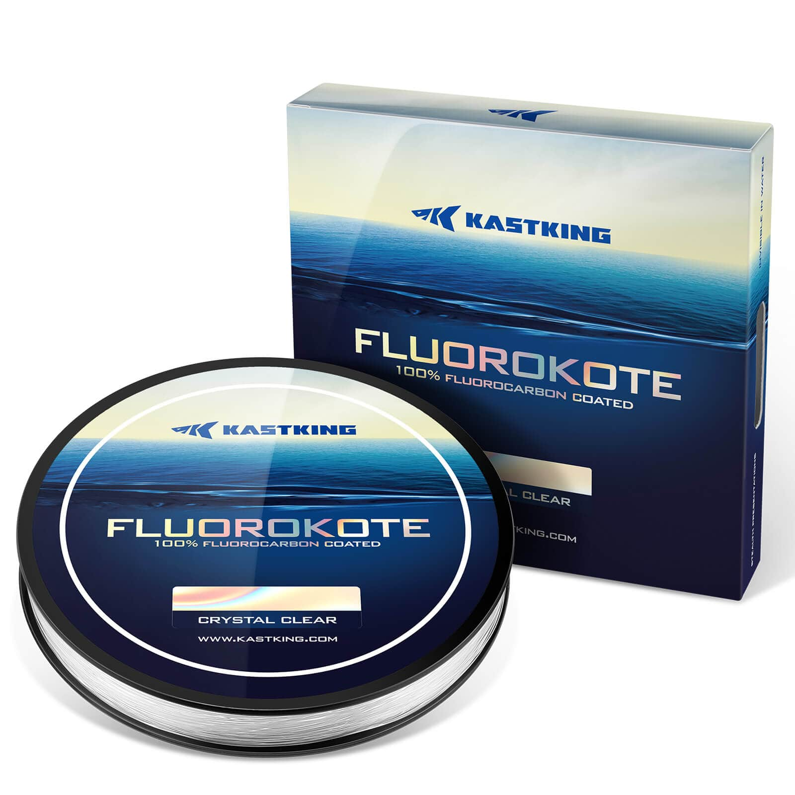

KastKing FluoroKote
Diameter chart, reel capacity & backing guide

FluoroKote combines a copolymer core with a fluorocarbon outer coating. It is not solid fluorocarbon. The checked current product offers 300-yard packages; its official chart provides the diameter pairs for these 6-20 lb rows.
- Construction
- Copolymer core with 100% fluorocarbon coating
- Listed strengths
- 6-20 lb
- Line type
- Copolymer main line
A coated-copolymer mainline
FluoroKote is a choice for anglers seeking KastKing's coated-copolymer construction as a working line. Do not assume it has the same density, handling or diameter as a 100% fluorocarbon product simply because the box says fluorocarbon coated. For the checked 10 lb size, the manufacturer lists 0.011 in and 0.28 mm; calculate fill from that size, not another KastKing formula.
How much FluoroKote will fit?
Calculated estimates, not measured fills. Stop at the reel manufacturer's fill level even if some line remains.
KastKing FluoroKote diameter chart
Exact current 300-yard FluoroKote variants matched to the manufacturer chart. This is Copolymer, not pure Fluorocarbon.
| Strength | Inches | mm | Spools (yd) |
|---|---|---|---|
| 0.008 | 0.220 | 300 | |
| 0.009 | 0.230 | 300 | |
| 0.011 | 0.280 | 300 | |
| 0.012 | 0.300 | 300 | |
| 0.013 | 0.330 | 300 | |
| 0.014 | 0.350 | 300 | |
| 0.015 | 0.380 | 300 |
Choosing your FluoroKote strength
Choose FluoroKote strength for your rod and presentation. The 6-8 lb sizes and 17-20 lb sizes are physically different choices, especially on a compact spinning reel.
For a compact spinning reel, consider how easily the selected diameter will handle as well as how much fits. A thicker coated line may call for a larger spool or a different tackle setup.
Only 300-yard variants were verified on the current product. The artwork's wider 150/300/500-yard range is not evidence that all three lengths can be selected now at each strength.
This is a source-based specification and setup guide, not a hands-on review or comparative performance test.
Want a guided recommendation?
Continue in the Setup WizardSame pound test, different diameters
At your selected strength
Loading diameter comparisons...
What changes with another line?
Nearby diameters in the line database
| Line | Strength | Inches | Difference |
|---|---|---|---|
| Loading line database... | |||
Backing, working line & leaders
Read the construction label
100% fluorocarbon coated describes the coating, not the entire line. Match the FluoroKote package rather than a Kovert fluorocarbon product.
Allocate the 300-yard package
Estimate full capacity or choose a shorter working section over backing. Allow enough working line to keep the backing junction out of routine casts and runs.
Check fill and handling
Stop at the reel's fill clearance under even tension. A theoretical capacity fit does not guarantee that a thick coated line will handle well on a small spool.
How Much Fits on These Reels?
Estimated full-spool capacity for the FluoroKote strength selected above, with no backing. These are calculated examples, not physical tests or recommendations for every pairing.
Loading capacity estimates...
FluoroKote questions, answered
Is FluoroKote 100% fluorocarbon?
No. The official construction is a polymer/copolymer core coated with 100% fluorocarbon. This guide classifies it as Copolymer.
Are 150- and 500-yard packages verified?
Not in the current exact product variants checked here. Artwork mentions them, but these rows use only selectable 300-yard packages.
Can I use a short section as a leader?
KastKing also markets leader use, but that does not make the coating solid fluorocarbon. Choose the section for its actual construction, diameter and your rig.
Specifications & sources
Checked September 13, 2026 against the official product information linked below. Inch and mm chart pairs are preserved as independently rounded published values. At 6 lb the coarse pair is .008 in/.22 mm, not an exact conversion. Offered specifications do not establish current stock; this is not an independent diameter measurement.
Calculations use the catalog's listed inch diameters. Published inch and millimeter values may differ slightly because of rounding.
- KastKing official product information Current FluoroKote product and visually inspected official chart verify the exact coated-copolymer construction, all seven assigned diameters and 300-yard variants. Not 100% fluorocarbon throughout.